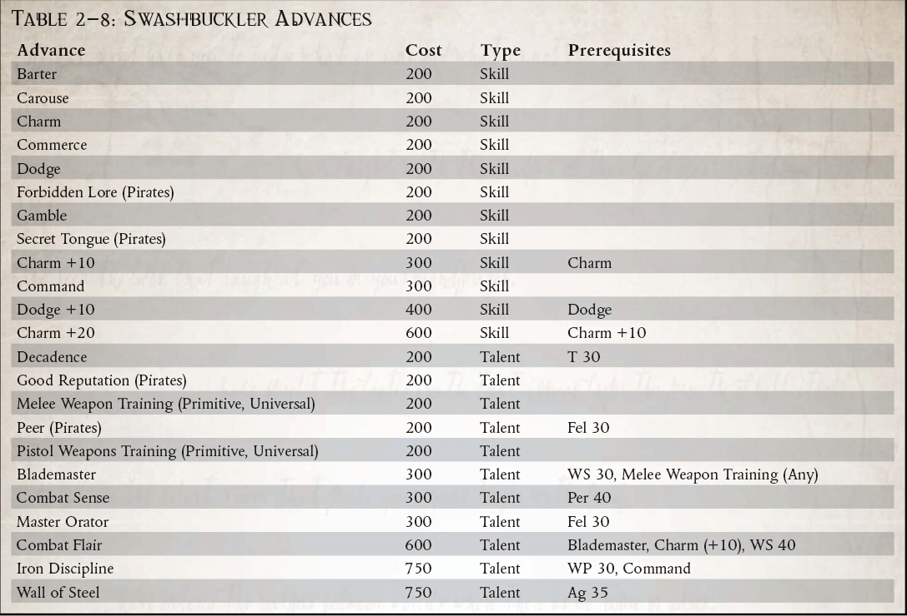

“杀了你？考虑到你为我的到来穿得这么好，我为什么要这么做？”
-Pollox de Navarro，武器大师，黑鹰
做海盗在很多方面都很容易。毕竟，这只是拿货不付钱的问题，没有任何官方支持或授权。到目前为止，要在这方面取得成功是一个更加困难的提议，因为它需要仔细的计划、可靠的信息网络、值得信赖的工作人员以及愿意处理赃物的围栏。然而，用 élan 来做这一切，是真正的主人，海盗的海盗——Swashbuckler 的标志。
面对广袤的恐怖和这个职业的危险，表现得如此放纵和华丽也许是一种精心的表演。它也可能是一种温和的精神错乱，旨在让探险者应对第 41 千年的各种噩梦。无论哪种方式，这样的展示都与大多数海盗的卑鄙野蛮一样有效。通常更多取决于目标对象的状态。魅力和风格可能会赢得残酷和粗暴无法赢得的那一天，而流血较少的胜利更加甜蜜。这并不是说 Swashbuckler 不能战斗，因为这个海盗必须在他的智慧天鹅绒下准备好钢铁。声誉就是一切，他必须准备好以行动支持言辞，至少在有证人的情况下。但是，一个浪荡剑客很少会杀人，除非需要驱使，否则除非被激怒，否则他会认为自己的行为与贵族一样文雅。以自信和自信的微笑迎接每一个挑战，以锋利的智慧战胜每一个敌人，以比他所面临的大多数人更大的个人荣誉准则突袭浩瀚的财富，做这一切以及更多的是带来对于 Koronus Expanse，如果不是一种文明感，也许是一种风格感。还有什么比这更光荣的呢？
这样的行为（或者是真实的行为，还是更真实的精神错乱？）并非没有风险。 The Expanse 对傻瓜没有什么耐心，一个 Swashbuckler 确实会出现在许多人眼中。很少有人会欣赏这样一个迷人的流氓，而海盗同胞会很高兴看到这样一个对手被除掉。再多的魅力也无法让一个沉重的喷火者置之不理……不过，Swashbuckler 也会获得附带好处，例如更广泛的联系网络和更可靠的代理人来支持他。许多行星和空间站可能不会正式欢迎他，而是对他的到来和离开视而不见。只有最清教徒的机构才会拒绝他，对许多人来说，他是一个受宠的顾客，他们甚至可能冒着受到地方法官的愤怒的风险。通过不陷入血腥和残暴，它还允许“赎回”并在绝望时期作为持牌私掠者甚至权证工作。
但对于一个 Swashbuckler 来说，这种行为本身就是一种奖励。以这样的准则生活，在其他人看来是不切实际的，面对虚空，双眼泛滥，傲慢的笑容，以及随时准备与任何对手决斗的剑——还有什么比这更美好的生活方式呢？
所需职业：任何。
替代等级：等级 3 或更高 (10,000 xp)
其他要求：必须拥有至少 35 的联谊会。探险家必须已经参与了至少一次对另一艘船的捕获和掠夺，并进行了一项令人难忘的或侠义的行为，证明有损于他的利益（不包括一个战败的敌人） ，在向敌舰开火之前警告敌舰，或者在决斗中轮到对观众发表诙谐的评论而不是战斗）。
特殊：游荡者自动获得天赋敌人（帝国海军）。

战斗魅力（天赋）先决条件：剑圣、魅力 (+10)、WS 40
探险者的近战技巧无人能及，但更重要的是，他在战斗中充满自信，自信甚至可以打动他的敌人。 用诙谐的方式快速地站起来，更快地，如果你的刀片没有刺穿他们的肉，那么你带刺的玩笑肯定会刺穿他们的镇静。 该天赋允许探索者在每个战斗回合中以半动作对抗任何近战敌人的挑战（+0）魅力对抗意志力测试。 如果他赢了，他会对他的敌人的武器技能施加 –10 的惩罚，每成功一个等级就会增加 5。 此处罚适用于一整轮。 多个探索者可以使用此天赋累积效果。 根据 GM 的判断，拥有野兽、恶魔、来自彼岸或机器特质的对手免疫此天赋。